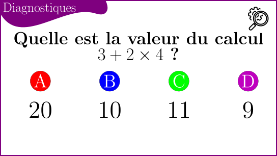
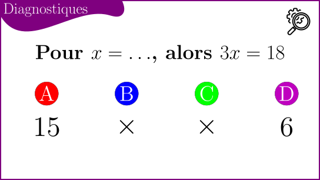
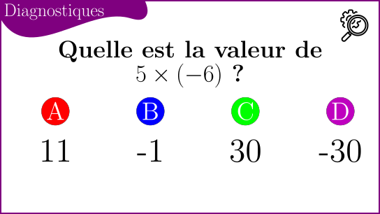
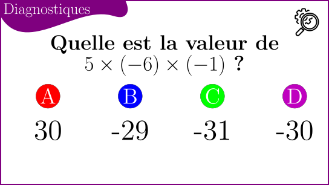

Mener des calculs en mathématiques.
1. Priorités opératoires.
1.1. Exemples.
Considèrez les calculs suivant :
- \(4 + 3 \times 2\)
- \(3 \times 2 + 4\)
- \((4 + 3)\times 2\)
- \(4 - 3 \times 2\)
Obtenez-vous les mêmes réponses à chaque fois ?
1.2. Les priorités opératoires.
Mais au fait, c'est quoi une opération ?
Vous connaissez au moins quatre opérations couramment utilisée tous les jours :
- L'addition (ou la somme)
- La soustraction (ou la différence)
- La multiplication (ou le produit)
- La division.
Il existe d'autres opérations, comme le carré, la racine carrée, l'inverse, l'opposé, etc. Mais nous y reviendrons plus tard.
Pour mener des calculs sans ambiguïté, il existe un ordre de priorité dans les calculs.
Dans un calcul, les priorités sont :
- D'abord tous les calculs qui se trouvent entre parenthèses (ou entre crochet)
- Puis, toutes les multiplications et les divisions
- Et enfin, les additions et les soustractions.
Donc, dans l'exemple précédent on avait :
- \(4 + 3 \times 2 = 4 + 6 = 10\)
- \(3 \times 2 + 4 = 6 + 4 = 10\)
- \((4 + 3)\times 2 = 7 \times 2 = 14\)
- \(4 - 3 \times 2 = 4 - 6 = -2\)
1.3. Les inconnues dans un calcul
En mathématiques, pour plusieurs raisons (résoudre un problème, étudier les valeurs prises par une formule, mener un raisonnement), on peut nommer un nombre par une lettre.
Souvent, la lettre choisie est \(x\), toutes les lettres de l'alphabet peuvent servir. Parfois on utilise même des lettres grecques (comme \(\alpha, \beta\), etc.)
Dans ce cas, si l'on souhaite multiplier un nombre par une inconnue, comme dans l'expression \(3 \times x\), on constate qu'il est difficile de distinguer \(\times\) avec \(x\). Donc on choisit d'écrire à la place de \(3 \times x\) l'expression \(3 x\). \(x\) est «collé» à \(3\). La multiplication est la seule opération à être «cachée» ainsi.
Quelle est la valeur de l'expression \(7 + 4x\) pour \(x = -3\) ?
On calcule \(7 + 4 \times (-3) = 7 - 12 = -5\). Est-ce qu'on se souvient de la multiplication par un entier négatif ?
1.4. Les divisions
Le premier symbole d'une division est \(\div\), mais il est quasiment jamais utilisé. À la place, on prèfere utiliser la notation d'une fraction, avec un numérateur qui est diviser par un dénominateur.
À la place de \(3 \div 2\) on écrira plutôt \(\frac{3}{2}\). Dans les deux cas on obtient \(1,5\).
À la place de \((3 + 4)\div 2\), on écrira plutôt \(\frac{3 + 4}{2}\).
2. Questions diagnostiques
2.1. Priorités opératoires sans inconnue

2.1.1. Correction
On a : \[ 3 + 2 \times 4 = 3 + 8 = 11 \] Donc la bonne réponse et la réponse C.
Pour obtenir les autres réponses, il fallait faire : \[ (3 + 2)\times 4 = 5 \times 4 = 20 \quad \text{on a besoin des parenthèses} \] Pour la réponse B : \[ 3\times 2 + 4 = 6 + 4 = 10 \quad \text{confusion entre les symboles} \] Pour la réponse D : \[ 3 + 2 + 4 = 9 \quad \text{confusion du dernier symbole} \]
2.2. Signification de la multiplication avec une inconnue.

2.3. Multiplication par un entier négatif.


3. Génerer des exemples.
3.1. Former une expression qui vaut 6, à partir d'une variable \(x = 2\)
On considère les quatres étapes comme il suit :
| Premier exemple, l'élève choisit ce qu'il veut. |
| Avec une somme et un produit. |
| Avec une somme, un produit, et des parenthèses utiles. |
| Avec une somme, et une division, sans aucune parenthèse. |